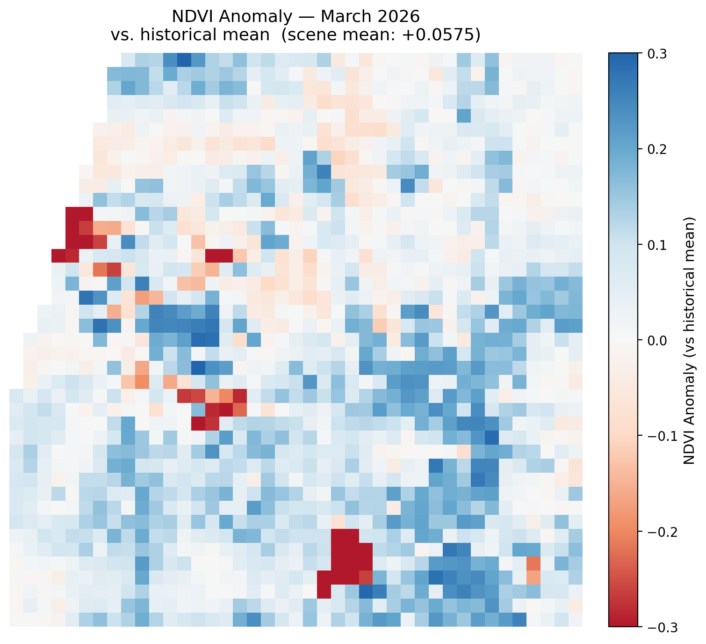
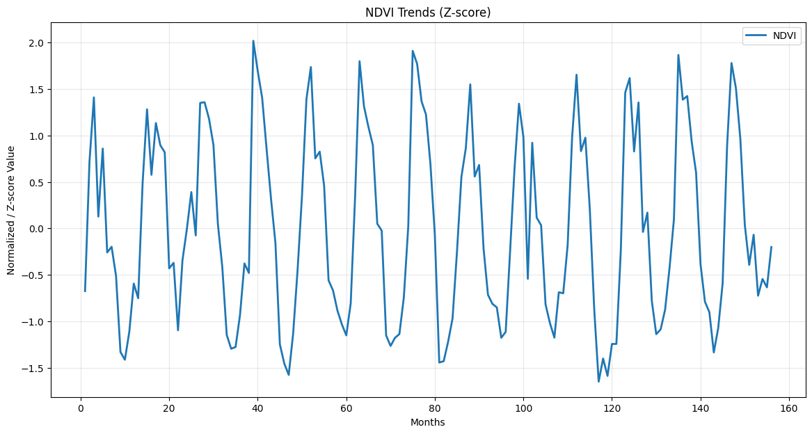

Satellite Environmental Monitoring
Wasatch Watch
Monthly satellite-based vegetation and drought reports for the Wasatch Front: powered by Landsat 8 imagery and original research methodology.
Monthly satellite-based vegetation and drought reports for the Wasatch Front: powered by Landsat 8 imagery and original research methodology.
Our most recent monthly report analyzing vegetation dynamics, seasonal anomalies, and drought signals across the Wasatch Front.

The March 2026 Wasatch Watch report documents a striking early green-up across the Wasatch Front, with NDVI rising both month-over-month (+0.039 from February) and year-over-year (+0.073 from March 2025). Raw NDVI values for March 2026 already rival what is typically observed in late April or early May, a clear sign that vegetation is blooming well ahead of schedule.
Read Full Report →Each monthly report combines multiple satellite-derived indices to build a complete picture of vegetation and drought conditions across the Wasatch Front.
Measures the relative greenness of an area using Landsat 8 red and near-infrared bands. Useful for tracking seasonal vegetation cycles and long-term trends, with important caveats around snow cover and dormancy interpretation.
Each month is compared against its historical average from the 2013–2026 Landsat archive using z-score normalization, isolating true anomalies from expected seasonal variation.
Each month is compared to the previous month and to the same month in the previous year, also utilizing the 2013-2026 Landsat 8 archive. This allows us to build a clear picture of how NDVI changes over different months and years.
A novel metric tracking cumulative winter severity using z-scored NDVI values below a dormancy threshold. Allows direct comparison of winter intensity across years.
Beyond monthly snapshots, Wasatch Watch tracks multi-year vegetation and drought trends using the full Landsat 8 archive from March 2013 to present. Key findings from the long-term record include an overall upward trend in summer vegetation, increasing drought stress signals in anomaly-adjusted indices, and the 2025–26 winter tracking as anomalously snow-poor relative to the historical record.

The 2025–26 winter dormancy signal is among the weakest in the 13-year record, consistent with documented snow drought conditions across northern Utah. This signal is visible in both raw NDVI and anomaly-adjusted indices.
While the winter dormancy signal appears to be consistent with snowpack and relative performance of our winter seasons, it has not been fully validated against snowpack data yet. This is something we are working on. However, for now, the "dormancy threshold" is arbitrarily assigned.
Salt Lake City, Utah
Wasatch Watch is an independent environmental monitoring project founded and operated by Scott Vars. The platform grew out of multi-year science fair research comparing satellite vegetation indices for drought detection in the Wasatch Front. The underlying research was recognized at the Utah Science and Engineering Fair and qualified for the GENIUS Olympiad international science competition.
All data collection, analysis, visualization, and writing is conducted independently using Google Earth Engine, Python, and the USGS Landsat 8 archive.